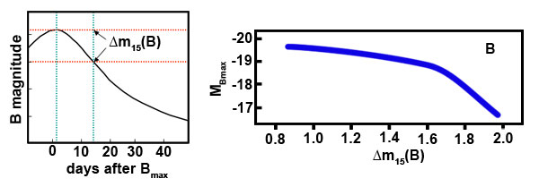
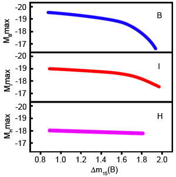

With the advent of charge coupled devices and systematic supernova searches, the quality of Type Ia supernova (SNIa) light curves improved enormously. Originally thought to be identical, it quickly became obvious that SNIa showed significant variation in the shapes and peak brightnesses of their light curves, and were therefore not standard candles as previously assumed.
This was formalised by Mark Phillips in 1993 who clearly demonstrated that there exists a correlation between the peak brightness of a SNIa and the rate at which the brightness declines in the first 15 days after maximum light in the B-band. This is known as the luminosity-decline rate relation.


Obviously, if the peak brightness of a SNIa is linked to its decline rate, a quantity that varies from supernova to supernova, SNIa in optical light are not the standard candles originally imagined. They are, however, standardisable candles if we apply the luminosity-decline rate relation to our calculations. This is done via one of three light curve fitting techniques: the Δ m15 method, the Multicoloured Light Curve Shapes method or the Stretch method. Each of these techniques uses a standard or series of standard light curves to determine how under or overluminous the new supernova is from a typical SNIa. Astronomers can then correct for the luminosity difference before using the supernova as a distance indicator.
The slope of the relation is different in each colour band, becoming steadily shallower as we move to redder wavelengths, and almost flat in the near-infrared spectrum. This means that SNIa observed at near-infrared wavelengths very closely approximate true standard candles. The correlation also means that we can standardise SNIa at other wavelengths by accounting for the dependence of luminosity on decline rate. This correction is always made by astronomers who use SNIa to measure distances in the Universe.